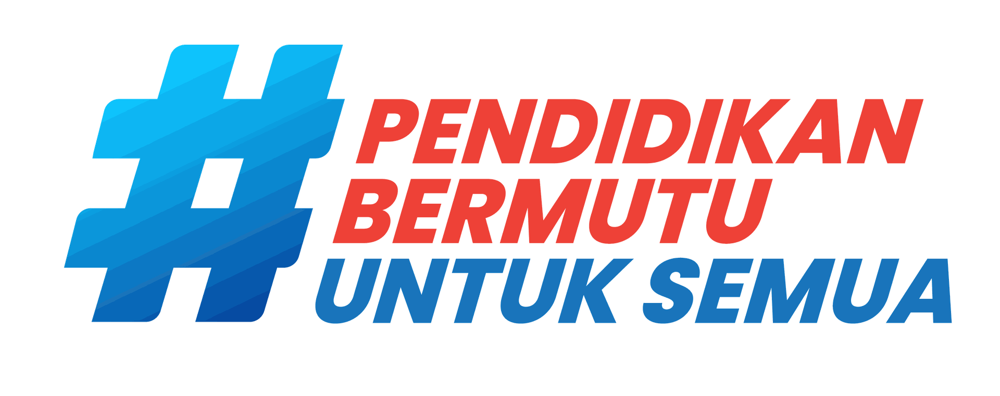
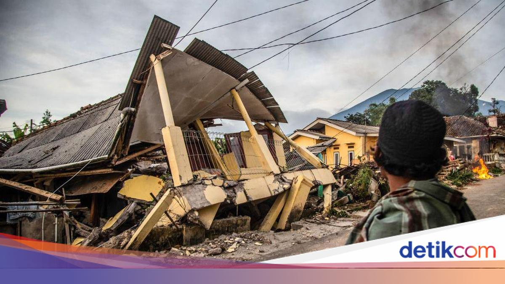
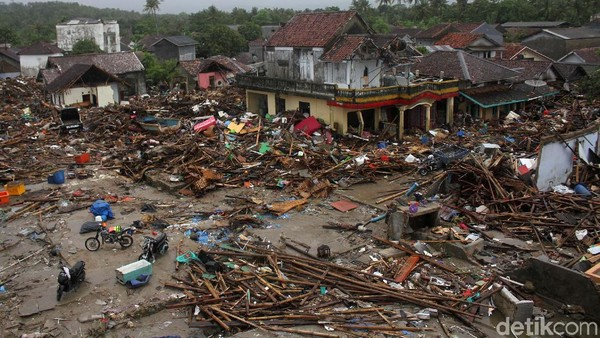

Pilih Aktivitas
Yuk pelajari potensi bencana Indonesia lewat berbagai aktivitas seru!
📖 Glosarium
Istilah asing dan istilah teknis yang digunakan dalam media “Mengenal Potensi Bencana Alam di Indonesia”.
Petualangan Belajar Dimulai!
Hari ini kamu akan menjelajahi Indonesia untuk mengetahui mengapa setiap wilayah memiliki potensi bencana yang berbeda.
“Mengapa potensi bencana di setiap wilayah Indonesia berbeda?”
Mengapa Indonesia Memiliki Banyak Potensi Bencana?
Klik setiap kartu untuk memahami hubungan kondisi geografis Indonesia dengan potensi bencananya.
Kenali Enam Potensi Bencana
Klik kartu untuk membaca pengertian singkat. Penjelasan akan muncul di tengah layar.
Gempa Bumi: Energi dari Dalam Bumi
Klik setiap kartu untuk memahami proses, kondisi wilayah, dampak, dan mitigasinya.
Bagaimana gempa terjadi?
Energi yang tersimpan pada batuan dapat dilepaskan secara tiba-tiba dan merambat sebagai gelombang seismik.

Gempa Darat Dangkal Cianjur (2022)
Guncangan sesar aktif di daratan yang merobohkan puluhan ribu rumah di lereng bukit.
Tsunami: Ancaman Gelombang bagi Wilayah Pesisir
Tidak setiap gempa menyebabkan tsunami. Kenali syarat, wilayah yang perlu waspada, dan langkah aman.
Dari gangguan laut menuju pesisir
Gangguan besar pada massa air dapat membangkitkan gelombang yang bergerak menuju wilayah pantai.

Tsunami Non-Tektonik Selat Sunda (2018)
Gelombang tinggi yang menerjang pesisir akibat runtuhnya dinding lereng anak gunung api ke dasar laut.
Erupsi: Aktivitas Magma dan Tekanan dari Dalam Bumi
Pelajari proses erupsi, jenis bahayanya, keterkaitan dengan lokasi, dan mitigasi yang bertanggung jawab.
Proses sederhana erupsi
Magma dan gas bergerak melalui sistem gunung api. Ketika kondisi memungkinkan, material vulkanik dapat keluar ke permukaan.
Banjir: Ketika Air Melebihi Kapasitas Lingkungan
Banjir biasanya dipengaruhi beberapa faktor sekaligus. Pecah masalahnya agar penyebab dan solusinya lebih mudah dianalisis.
Dekomposisi faktor banjir
Curah hujan, kondisi sungai, drainase, topografi, resapan, dan penggunaan lahan dapat saling berinteraksi.
Tanah Longsor: Saat Lereng Kehilangan Kestabilan
Amati hubungan antara kemiringan, air, kondisi tanah, vegetasi, dan aktivitas manusia.
Faktor yang perlu dianalisis
Lereng yang curam, hujan, karakter tanah atau batuan, vegetasi, dan perubahan lereng dapat memengaruhi kestabilan.
Kekeringan: Ketika Ketersediaan Air Menurun
Kekeringan berlangsung dalam periode tertentu dan dapat memengaruhi rumah tangga, pertanian, serta lingkungan.
Dari kurang hujan menuju krisis air
Kondisi hujan yang rendah dalam periode tertentu dapat mengurangi cadangan air, terutama jika kebutuhan air tinggi dan pengelolaannya kurang baik.
Jelajahi Contoh Potensi Bencana di Indonesia
Gunakan filter, lalu klik hotspot. Fokuslah pada hubungan antara karakter wilayah dan potensi bencananya.
Apakah Potensi Bencana Tersebar Secara Acak?
Bandingkan tiga contoh pola berikut. Klik kartu untuk memahami alasan geografisnya.
Kondisi Geografis → Potensi Bencana
Klik setiap hubungan. Tujuannya bukan menghafal, tetapi memahami mengapa kondisi wilayah tertentu perlu dianalisis.
Susun Langkah Mitigasi Secara Logis
Mitigasi bertujuan mengurangi risiko dan dampak. Klik setiap tahap untuk membaca contoh tindakan yang bertanggung jawab.
Empat Hal Penting yang Sudah Kamu Pelajari
Klik kartu untuk mengingat kembali inti pembelajaran sebelum melanjutkan ke aktivitas berikutnya.
Ayo Bermain!
Uji pemahamanmu tentang potensi bencana melalui lima aktivitas interaktif.
Pasangkan Ciri dengan Bencananya
Klik satu kartu petunjuk lalu klik jenis bencana yang sesuai. Pada laptop, kartu juga bisa diseret.
🧩 Kartu Petunjuk
🎯 Jenis Bencana
Kondisi Wilayah, Bencana Apa?
Baca kondisi geografisnya, lalu pilih potensi bencana yang paling relevan.
Memuat kasus...
Pilih Data yang Benar-Benar Penting
Gunakan abstraksi: pilih tepat 3 informasi yang paling relevan untuk menganalisis kasus.
Memuat kasus...
Susun Langkah Secara Logis
Seret kartu atau gunakan tombol ↑ ↓ untuk menyusun tindakan dari langkah awal hingga akhir.
Memuat kasus...
Pilih dengan Cepat!
Baca petunjuknya dan pilih jawaban yang paling tepat dari dua pilihan.
Memuat soal...
Hasil Tantanganmu
Hasil menunjukkan progres aktivitas dan ketepatan jawaban yang sudah kamu kerjakan.
Mengenali Bencana
Kondisi Wilayah
Memilih Informasi
Menyusun Mitigasi
Tantangan Cepat
Latihan Pemahaman
Jawab 10 soal berdasarkan materi yang telah dipelajari. Pilih A, B, C, atau D.
Pertanyaan latihan akan tampil di sini.
Hasil Latihanmu
Gunakan hasil ini untuk mengetahui bagian materi yang sudah dikuasai dan yang masih perlu dipelajari kembali.
Latihan selesai!
Hasil latihan akan tampil di sini.
🧪 Laboratorium Bencana Indonesia
Pilih bencana, atur tiga variabel, lalu jalankan simulasi untuk melihat bagaimana kombinasi kondisi dapat mengubah situasi.
Simulasi Bencana
Atur variabel kemudian tekan Mulai Simulasi.
Atur Variabel
Geser slider atau pilih kondisi pada setiap variabel. Hasil ini adalah model pembelajaran sederhana, bukan prediksi bencana nyata.
🔎 Apa yang Kamu Temukan?
Setiap bencana dipengaruhi oleh kombinasi kondisi yang berbeda. Eksperimen membantumu melihat hubungan sebab–akibat.
💭 Refleksi Pembelajaran
Tuliskan jawaban dengan kalimatmu sendiri. Tidak perlu panjang, tetapi jelaskan alasanmu dengan jelas.
1. Kenali
Sebutkan 4 jenis bencana alam yang sudah kamu pelajari dan jelaskan secara singkat ciri masing-masing.
Tujuan: mengenali berbagai potensi bencana alam di Indonesia.2. Hubungkan
Pilih 2 jenis bencana, lalu jelaskan bagaimana kondisi geografis wilayah dapat memengaruhi potensi bencana tersebut.
Petunjuk: pesisir, lereng, sungai, gunung api, tanah, curah hujan, atau kondisi lingkungan.3. Temukan Pola
Pola apa yang kamu temukan dari persebaran potensi bencana di Indonesia? Tuliskan 1 contoh pola dan jelaskan mengapa pola itu dapat terjadi.
Tujuan: membaca pola persebaran dan tidak menganggap bencana tersebar secara acak.4. Mitigasi & Tanggung Jawab
Pilih 1 jenis bencana. Tuliskan tindakan Sebelum → Saat → Setelah bencana, lalu satu tindakan yang dapat kamu lakukan untuk mengurangi risiko di lingkunganmu.
Tujuan: menyusun langkah mitigasi secara logis dan bertanggung jawab.🌏 Mengenal Potensi Bencana Alam di Indonesia
Inilah inti yang kamu peroleh setelah belajar, bermain, berlatih, melakukan simulasi, dan merefleksikan pembelajaran.
Mengenali Potensi Bencana
Indonesia memiliki beragam potensi bencana, antara lain gempa bumi, tsunami, erupsi gunung api, banjir, tanah longsor, dan kekeringan. Setiap bencana memiliki penyebab, proses, dampak, dan ciri yang berbeda.
Menghubungkan Kondisi Geografis
Potensi bencana berkaitan dengan kondisi wilayah: aktivitas tektonik dan tanah memengaruhi dampak gempa; pesisir berkaitan dengan tsunami; gunung api aktif dengan erupsi; hujan, sungai, drainase, lereng, vegetasi, musim kering, dan ketersediaan air memengaruhi bencana lainnya.
Membaca Pola Persebaran
Potensi bencana tidak tersebar secara acak. Tsunami berkaitan dengan wilayah pesisir tertentu, erupsi mengikuti kawasan gunung api, longsor lebih relevan pada lereng rentan, banjir pada wilayah yang mudah tergenang, dan kekeringan pada wilayah dengan tekanan ketersediaan air.
Mitigasi yang Logis & Bertanggung Jawab
Risiko dapat dikurangi dengan mengenali ancaman, mengurangi kerentanan, menjaga lingkungan, menyiapkan jalur dan tindakan evakuasi, serta mengikuti informasi resmi. Mitigasi dilakukan secara runtut: Sebelum → Saat → Setelah bencana.
Selamat!
Kamu sudah menyelesaikan materi “Mengenal Potensi Bencana Alam di Indonesia”. Jangan lupa kumpulkan buku refleksimu kepada guru. Sekarang lihat kembali rangkuman seluruh perjalanan belajarmu.
Judul
Penjelasan materi.